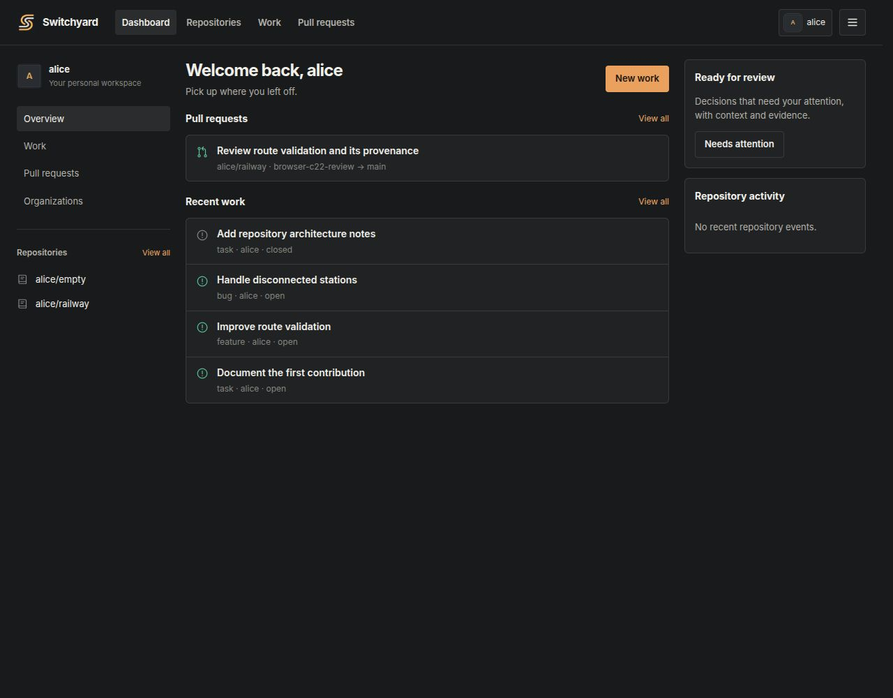
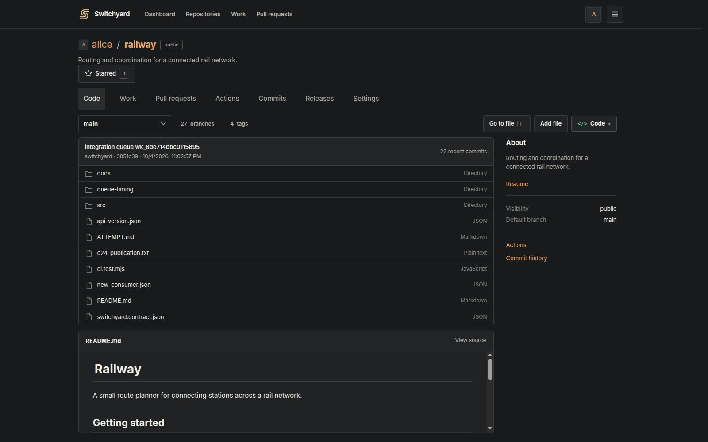

Every actor gets isolated state.
Humans and agents can work concurrently without sharing a writable branch or racing to be the last writer.
Switchyard is a Git collaboration platform for teams where humans and coding agents work at the same time. Every change stays isolated, reviewable and attributable until it earns its way into canonical.

Branches, commits, refs, diffs, pull requests and ordinary Git clients stay exactly where developers expect them. Switchyard adds coordination around Git instead of replacing it.
Humans and agents can work concurrently without sharing a writable branch or racing to be the last writer.
Checks, reviews, semantic validation and repository policy all run before the Integration Queue moves the canonical ref.
Attempts, findings, workflow runs and rejected integrations remain durable and attributable instead of disappearing into an agent transcript.
When you click Code in Switchyard and run git clone, Git connects directly to the repository's Cloudflare Artifacts HTTPS remote. Fetch and push use that same remote. Switchyard layers collaboration and policy around the repository instead of replacing it.
Browse source, history, branches, tags, pull requests and Work using familiar Git-host patterns. Agent-native machinery appears progressively when a repository actually needs it.
Explore repository design →
A human can use Switchyard like an ordinary Git host. An agent can operate through a scoped Attempt. Both eventually meet at the same review, validation and integration machinery.
Author engineering workflows in JavaScript. Switchyard persists the durable boundaries, so a control-plane restart does not duplicate completed external effects.
function run(ctx) {
ctx.note({ text: "Review evidence prepared" });
ctx.wait_approval({ reason: "Confirm the next step" });
return { approved: true };
}Switchyard has been exercised against real Git repositories, real Trestle state, browser workflows, queue contention, process death, conflicts and self-dogfooding.